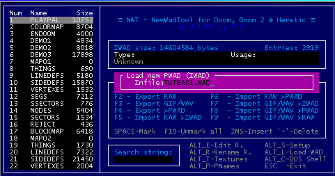
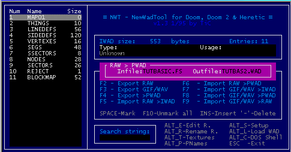
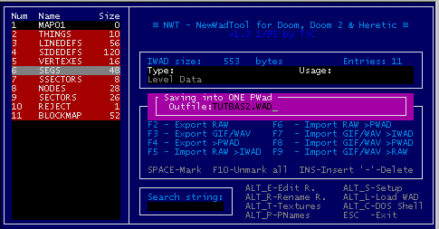

Basic Script Implementation: Part Deux
Basic Script Implementation: Part Deux
Now it's time for the actual scripting! Remember, we wanted to make a switch that would move the floor, display a message, then after 200 tics exit the level.
Whip out a copy of notepad! First, you'll want to set off a [scripts] section.
[scripts]
Yeah, just as simple as that. Now you need to create a new script sequence. What number to give it? Well, remember how we gave the linedef's bit #9 a tag of 70? That's when this comes in use.
[scripts]
script 70
{
}
Now, we need to tell script 70 what to do after it is activated. Since we want it to move the floor first, we'll start
it with that function. Remember we gave the sector a tag of 13? Again, that comes into play here. Looking up on the handy-dandy Complete Function page, you'll see that there is a function called movefloor(), which is what we'll be using. The syntax for movefloor is movefloor([tag], [height], [speed]). We know the tag for our sector is 13, we know the height we want is 32, and we'll set the speed as 1 for this example.
[scripts]
script 70
{
movefloor(13, 32, 1);
}
We'll make it play our message simultaneously with the floor movement. Looking on the function page again, you'll see "tip" as a centered message on the screen, so we'll use that.
[scripts]
script 70
{
movefloor(13, 32, 1);
tip("This is prower speaking!");
}
Finally, we'll make the computer wait 200 tics by using the wait function, then end the level by using the exitlevel function.
[scripts]
script 70
{
movefloor(13, 32, 1);
tip("This is prower speaking!");
wait(200);
exitlevel();
}
Congratulations! Your scripting is done! If you were too lazy to make that, you can download it here.
If you've ever messed with importing graphics and the such before, you've probably messed around with NWT. NWT is actually a very powerful program, but poorly documented on how to use it. (Not to mention more bugs than a flea circus.)
After running nwt.exe and configuring it (it's pretty self-explanatory), press ALT+L and NWT will prompt you for a file. Type the name of your .wad file.

You should see a MAP01 entry, followed by some data. Press F6, choose your script file, and an outfile (can _not_ be the current wad you are using).

Now, highlight everything _except_ the MAP01 entry. Press F4 to export it, and choose the name of the .wad you exported the script to.

Press ALT+L, and input the name of the .wad you exported the script to. If you do _not_ see MAP01 as the first entry, go to that entry and press ALT+R to rename it to MAP01.
Now, the fated hour is upon us. Use the command SMMU -file yourwad.wad. If all goes well, viola! You have a switch that raises the floor 32 units, displays your message, and exits the level after 200 tics. Congratulations! The completed wad is available here to download.